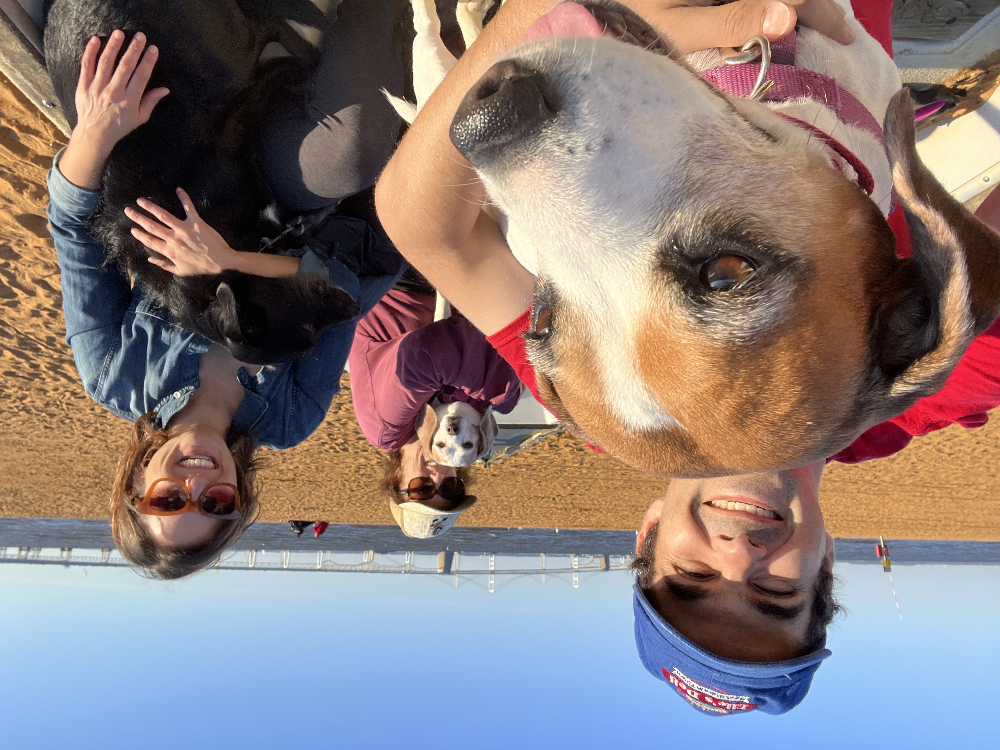

My dogs Pumpkin and Autumn always bring me joy. I have a big sweet tooth for all things ice cream and am a big fan of a bakery crawl on the weekends! My last job as a cook I was making ice cream for a Michelin starred restaurant in DC that began making comfort food after the pandemic, Gemini, formerly known as Happy Gyro, fka Komi.
